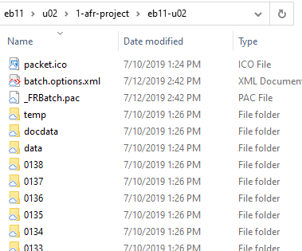

Container for OCR Project files for ABBYY FineReader.
These are the ABBYY FineReaderOCR-Project folders that containing one 150- to 250-page section. An OCR-Project retains the text boxes and
language settings and can be used to output text in multiple formats. The folder name
includes the edition abbreviation and section name
(eb09-r01). New OCR-Project folders
overwrite earlier ones, so we only keep the most recent version.Figure 1: 1-afr-project folder

DANGER:OCR-Project folders contain hidden files by
default that are essential to their retention of text boxes, etc. When creating an
OCR-Project, change the attribute value on the three
hidden files to unhidden to ensure that they are
included whenever the folder is copied.